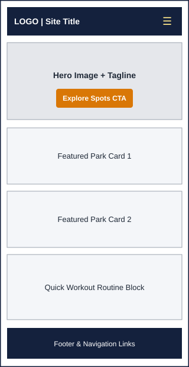
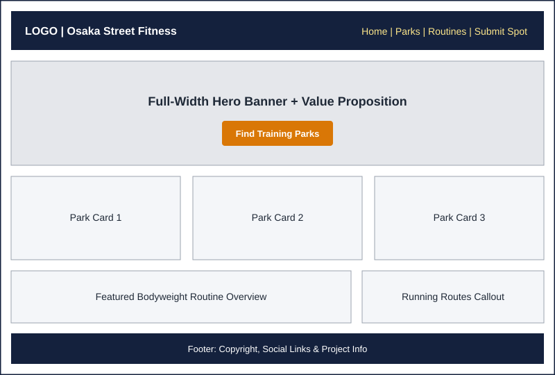

1. Site Name
Osaka Street Fitness (Proposed domain: osakastreetfit.org)
Reason: The name clearly identifies both the geographic focus (Osaka, Japan) and the core subject (outdoor calisthenics parks, pull-up bars, and running loops), making it immediately recognizable to local residents and travelers.
2. Site Purpose
Osaka Street Fitness serves as a practical directory and training hub for outdoor bodyweight athletes and runners in Osaka.
- Map public parks with pull-up bars, parallel dip bars, and open training spaces by neighborhood and nearest train station.
- Provide structured bodyweight workout routines and distance-measured running routes along Osaka rivers and parks.
- Offer an interactive workout planner and spot-submission form so visitors can log routines or suggest new park locations.
3. Scenarios
- Scenario 1: "Which parks near Namba or Tennoji have full-height pull-up bars and dip stations that are free to use?"
- Scenario 2: "What is a solid 30-minute push-up and pull-up routine I can follow at a local park with minimal equipment?"
- Scenario 3: "Where can I find a flat, well-lit 5 km running path in Osaka for evening runs?"
4. Color Schema
- Deep Navy (#14213D): Used for the header, footer, primary headings, and navigation accents.
- Energetic Amber (#D97706): Used for section top borders, active buttons, and key visual highlights.
- Soft Cool Gray (#F4F6F9): Used for the overall page background to keep reading comfortable.
- Pure White (#FFFFFF) & Charcoal Text (#1F2937): Used for content cards and high-contrast body text.
5. Typography
- Headings (
Oswald, sans-serif): Applied toh1,h2, and navigation labels for a bold, athletic visual hierarchy. - Body Copy (
Inter, sans-serif): Applied to paragraphs, lists, form labels, and table data for clean readability on mobile and desktop screens.
6. Wireframes
Low-fidelity layout sketches for the home page across mobile and desktop viewports:

